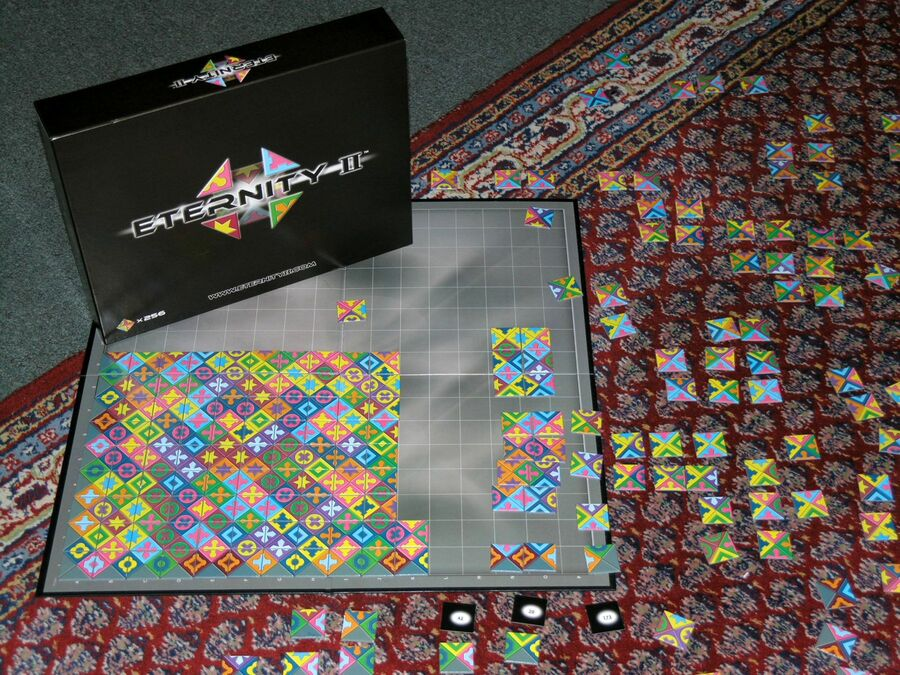

Recherche par Force brute

Source image : https://www.flickr.com/photos/x6e38/3440634940/
1 Principe
1.1 Problème de décision et exploration exhaustive
Considérons un problème du type trouver un \(x \in V\) vérifiant une propriété \(P(x)\).
Dans certains problèmes, un tel \(x\) n’est pas unique et on cherche à tous les énumérer.
Une recherche par force brute ou recherche exhaustive, consiste à énumérer l’ensemble \(V\) jusqu’à obtenir une solution en testant \(P\) pour chaque valeur rencontrée.
Des problèmes précédents, la recherche linéaire est le plus simple et le programme suivant est caractéristique d’une recherche exhaustive :
La forme usuelle sera alors
pour chaque v dans V
si P(v) est vérifié
s'arrêter avec la solution vOn rappelle que pour pouvoir s’arrêter au cours de l’énumération en OCaml, si on programme en impératif, on utilise en général des exceptions comme dans le chapitre Exceptions en OCaml.
Cela pose naturellement la question de l’énumération des éléments de \(V\). Si c’est immédiat dans l’exemple peu pertinent de la recherche dans un tableau, c’est beaucoup plus complexe pour l’énumération des assemblages de pièces d’un puzzle, par exemple.
Pour la recherche du mot de passe, on pourrait commencer par énumérer les chaînes de longueur 1, puis de longueur 2, et ainsi de suite.
Le plus souvent, l’ensemble \(V\) est fini (pour les mots de passe, cela peut consister à limiter la longueur maximale du mot de passe). Ainsi, une recherche par force brute effectue \(O(|V|)\) itérations.
1.2 Problème d’optimisation et exploration exhaustive
On retrouve la notion d’exploration exhaustive ou force brute pour des problèmes d’optimisation. Il s’agit de problèmes de la forme : déterminer \(x \in V\) tel que \(f(x)\) soit minimale ou maximale.
L’exploration exhaustive consiste alors à calculer toutes les images par \(f\) des éléments de \(V\) afin de déterminer un extremum.
2 Recherche par retour sur trace (backtracking)
2.1 Construction itérative de candidats
Dans de nombreux cas, l’ensemble \(V\) peut se décrire une processus itératifs de construction de ses éléments. Une manière de voir cela est de parler de positions et de mouvements, ou coups.
Par exemple, considérons un puzzle comme le puzzle Eternity II constitué de 256 pièces carrées. Une configuration finale du puzzle consiste à avoir placé les 256 pièces. Parmi celles-ci, les configurations valides sont celles satisfaisant les contraintes de chaque côté.
Comme pour tous les puzzles, la position initiale est un plateau vide et chaque mouvement consiste à placer une pièce disponible dans un emplacement disponible. Cela correspond à la manière dont on procéderait à la main : 
Ainsi, on peut représenter la construction de \(V\) sous la forme d’un arbre dont les nœuds sont les positions et les arêtes les mouvements. Les positions complètes sont les feuilles de l’arbre, elles correspondent aux éléments de \(V\) et ce sont donc celles-ci qu’on va explorer pour y trouver une solution.
L’avantage de cette représentation arborescente est qu’elle découle naturellement d’un parcours récursif des positions.
Tout d’abord, il va falloir définir un type de positions partielles comme on a pu le voir dans le chapitre Options en OCaml.
Comme indiqué dans ce chapitre, si le type d’une grille de Sudoku remplie est int array array, pour pouvoir représenter des grilles en cours de remplissage, on va utiliser le type int option array array. On rappelle que l’utilisation de la valeur None permettra de représenter une partie non construite comme une case vide.
On considère ainsi un type position des positions partielles, un type mouvement et des fonctions
(* les mouvements accessibles depuis une position.
[] si la position est complète *)
val mouvements : position -> mouvement list
(* applique un mouvement *)
val applique : position -> mouvement -> position
(* vérifie si une position est complete *)
val complete : position -> bool
(* vérifie si une position complete est valide *)
val valide : position -> boolSchématiquement, un algorithme d’énumération aura la structure suivante en OCaml :
Si la position initiale est pos0, on pourra résoudre le problème ainsi :
Cet algorithme de parcours des solutions est appelé le retour sur trace, ou backtracking en anglais. Il tire partie de la récursivité pour remonter les positions après avoir essayé en vain une construction.
2.2 Évaluation partielle et raccourcis
Si on reprend la construction itérative précédente, on se rend compte qu’elle n’est pas très intelligente : faut-il remplir l’intégralité d’un puzzle avant de se rendre compte qu’il est invalide en raison des deux premières pièces ?
On peut donc raffiner l’approche précédente en introduisant une notion de mouvements valides qui sont les mouvements qui préservent la correction partielle.
En pratique, il suffit de remplacer la fonction mouvements par une fonction mouvements_valides.
C’est un changement réduit qui peut avoir un grand impact sur l’arbre des positions. En reprenant l’illustration précédente, on peut imaginer que cela reviendrait à ne pas parcourir les mouvements rouges et les sous-arbres associés :
2.2.1 Problème : résolution de Sudoku
La recherche par retour sur trace se prête très bien à la résolution de problèmes comme le Sudoku. On va ici tout simplement tenter de remplir chaque case du haut vers le bas tant qu’on satisfait les contraintes du Sudoku. Le programme sera ainsi très proche de la résolution des huit reines.
Commençons par rappeler le principe du Sudoku :
On part d’une grille de 81 cases réparties en une grille de 3x3 sous-grilles de 3x3 cases et comportant des chiffres de 1 à 9 dans certaines cases.

L’objectif est de remplir chaque case avec un chiffre de 1 à 9 de sorte que chaque ligne, chaque colonne et chaque sous-grille 3x3 comporte une et une seule fois chaque chiffre.
Un sudoku admet une unique solution.
Pour représenter une grille de Sudoku en OCaml on utilise un (int option) array array, la valeur None signifiant que la case est vide et la valeur Some x qu’elle est remplie avec la valeur \(x\).
On fait le choix de représenté la grille par un tableau de lignes, ce qui signiie que pour accèder à la case de coordonnée \((x,y)\) dans g il faut écrire g.(y).(x).
Le problème donné précédemment est alors représenté par la valeur suivante :
let probleme = [|
[| Some 1; None; None; None; None; None; None; None; Some 6 |];
[| None; None; Some 6; None; Some 2; None; Some 7; None; None |];
[| Some 7; Some 8; Some 9; Some 4; Some 5; None; Some 1; None; Some 3 |];
[| None; None; None; Some 8; None; Some 7; None; None; Some 4 |];
[| None; None; None; None; Some 3; None; None; None; None |];
[| None; Some 9; None; None; None; Some 4; Some 2; None; Some 1 |];
[| Some 3; Some 1; Some 2; Some 9; Some 7; None; None; Some 4; None |];
[| None; Some 4; None; None; Some 1; Some 2; None; Some 7; Some 8 |];
[| Some 9; None; Some 8; None; None; None; None; None; None |];
|]Afin de définir la fonction de résolution, on définit une première fonction suivant de signature :
telle que l’appel à suivant g (x,y) renvoie Some (xi,yi) quand \((x_i,y_i)\) sont les coordonnées de la prochaine case libre, dans l’ordre gauche à droite puis haut vers bas, après \((x,y)\) ou None quand il n’existe pas de telle case libre. Cela signifie alors que la grille est entièrement remplie.
On définit également une fonction valide de signature
telle que l’appel à valide g x y renvoie true si et seulement si la valeur placée en coordonnée \((x,y)\) n’invalide pas la grille. Ne pas prendre cette valeur en paramètre permettant d’écrire un peu plus simplement cette fonction. La fonction est assez directe, étant donné \((x,y)\) on va parcourir sa ligne, sa colonne et sa sous-grille pour vérifier qu’un nombre n’a pas été placé deux fois à l’aide d’un tableau de drapeaux :
let valide g x y =
let v = ref true in
let vus_colonne = Array.make 9 false in
for y0 = 0 to 8 do
match g.(y0).(x) with
| None -> ()
| Some k ->
if vus_colonne.(k-1)
then v := false;
vus_colonne.(k-1) <- true
done;
let vus_ligne = Array.make 9 false in
for x0 = 0 to 8 do
match g.(y).(x0) with
| None -> ()
| Some k ->
if vus_ligne.(k-1)
then v := false;
vus_ligne.(k-1) <- true
done;
let vus_grille = Array.make 9 false in
let xb = (x / 3) * 3 in
let yb = (y / 3) * 3 in
for xd = 0 to 2 do
for yd = 0 to 2 do
match g.(yb+yd).(xb+xd) with
| None -> ()
| Some k ->
if vus_grille.(k-1)
then v := false;
vus_grille.(k-1) <- true
done
done;
!vOn peut alors définir la fonction resout qui va résoudre le Sudoku en effectuant tous les remplissages tant qu’on a une grille valide. Dès qu’une solution est trouvée, on s’arrête. Pour cela, on utilise le mécanisme des exceptions pour permettre une sortie prématurée. On a fait le choix de travailler en place dans la grille, ainsi à la fin de l’exécution de la fonction, la grille correspond à la solution.
La résolution du Sudoku donnée précédemment par ce programme est présenté dans la vidéo suivante :
2.3 Énumération de toutes les solutions
Le problème précédent du Sudoku n’avait par définition qu’une unique solution. Cependant, il existe des problèmes pour lesquels plusieurs solutions existent et pour lesquels on souhaite les énumérer.
La fonction précédente pourra alors devenir :
2.3.1 Problèmes des huit reines
L’exemple classique de ce problème est celui des huit reines : étant donné un échiquier, peut-on placer huit reines de sorte qu’aucune reine ne puisse prendre une autre reine ? Plus précisément : sur un plateau de 8x8 cases, peut-on placer huit pions tels que deux pions quelconques ne soient jamais sur la même ligne ou la même diagonale ?
Exemple de solution :

Ce problème admet effectivement des solutions partielles en ne considérant que \(k\) reines à placer. Pour énumérer les solutions, on peut même se contenter de solutions partielles où les \(k\) reines sont placées sur les \(k\) premières rangées.
Voici ainsi un algorithme pour énumérer les solutions :
Supposons que \(k\) reines aient été placées et qu’on dispose d’une solution partielle.
- Si \(k = 8\) alors toutes les reines sont placées et la solution est complète, on la comptabilise
- Sinon, on continue la recherche pour chaque position de la \(k+1\) reine sur la \(k+1\) rangée qui préserve le fait d’être une solution partielle.
Ici, quand on dit qu’on continue la recherche, ce qu’on signifie, c’est qu’on effectue un appel récursif.
Pour programmer cette méthode, on va définir une fonction récursive de signature :
Un appel à resout_reines part va ainsi renvoyer la liste des solutions complètes construites à partir de la solution partielle part. Les solutions sont représentées par des listes de couples de coordonnées sur l’échiquier, donc dans \([|0;7|]^2\)
Voici une implémentation où on explore les solutions à l’aide d’une boucle impérative dans l’appel récursif. La fonction valide permet de tester si le placement d’une reine est possible avant d’effectuer un appel.
let rec valide (x1,y1) l =
match l with
| [] -> true
| (x2,y2)::q ->
x1 <> x2 && abs (x2-x1) <> abs(y2-y1) && valide (x1,y1) q
let rec resout_reines part =
let k = List.length part in
if k = 8
then [ part ]
else begin
let resultats = ref [] in
for x = 0 to 7 do
let essai = (x,k) :: part in
if valide (x,k) part
then begin
resultats := (resout_reines essai) @ !resultats;
end
done;
!resultats
endet, ici, une autre implémentation purement récursive à l’aide d’une fonction récursive.
Une partie de l’arbre de recherche est présenté sur l’image suivante :

L’arbre complet comporte 2057 nœuds dont 92 feuilles correspondant aux solutions du problème. À titre de comparaison, l’arbre exhaustif correspondant à faire tous les choix de placement à raison d’une reine par ligne compterait \(8^8 = 16777216\) nœuds. On voit bien que le backtracking est plus économe en exploration.
2.4 TP : tours du cavalier
2.5 TP : jeu du solitaire
On considère ici le jeu du solitaire. On a un plateau comportant 33 emplacements et initialement 32 pions, représenté par des ronds blancs, et un emplacement vide au centre :
Les différents mouvements possibles consiste à passer d’une configuration \(\bullet \bullet \circ\) à \(\circ \circ \bullet\) et ainsi à diminuer d’un pion le nombre total de pions. Ces configurations peuvent être rencontrées dans les directions horizontales ou verticales.
On considère que la partie est gagnée quand il n’y a plus qu’un pion sur le plateau.
2.5.1 Première implémentation naïve
On va représenter un plateau par le type OCaml :
let plateau_initial () =
[|
[| Invalide; Invalide; Pion; Pion; Pion; Invalide; Invalide |];
[| Invalide; Invalide; Pion; Pion; Pion; Invalide; Invalide |];
[| Pion; Pion; Pion; Pion; Pion; Pion; Pion |];
[| Pion; Pion; Pion; Vide; Pion; Pion; Pion |];
[| Pion; Pion; Pion; Pion; Pion; Pion; Pion |];
[| Invalide; Invalide; Pion; Pion; Pion; Invalide; Invalide |];
[| Invalide; Invalide; Pion; Pion; Pion; Invalide; Invalide |]
|]Un mouvement peut être assimilé à un triplet de coordonnées décrivant, dans l’ordre \(\bullet \bullet \circ\) les trois cases concernées. Il se trouve que la case centrale est toujours le milieu des deux autres, on peut donc se contenter de donner un couple de coordonnées pour décrire un mouvement.
let possible p (i1,j1) (i3,j3) =
let i2, j2 = (i1+i3)/2, (j1+j3)/2 in
p.(i1).(j1) = Pion && p.(i2).(j2) = Pion && p.(i3).(j3) = Vide
let mouvements p =
(* on utilise une pile *)
let l = ref [] in
for i = 0 to n-1 do
for j = 0 to n-3 do
if possible p (i,j) (i,j+2)
then l := ( (i,j), (i,j+2) ) :: !l;
if possible p (i,j+2) (i,j)
then l := ( (i,j+2), (i,j) ) :: !l;
if possible p (j+2,i) (j,i)
then l := ( (j+2,i), (j,i) ) :: !l;
if possible p (j,i) (j+2,i)
then l := ( (j,i), (j+2,i) ) :: !l
done
done;
!llet applique p mouv =
let (i1,j1), (i3,j3) = mouv in
let i2, j2 = (i1+i3)/2, (j1+j3)/2 in
p.(i1).(j1) <- Vide;
p.(i2).(j2) <- Vide;
p.(i3).(j3) <- Pion
let defaire p mouv =
let (i1,j1), (i3,j3) = mouv in
let i2, j2 = (i1+i3)/2, (j1+j3)/2 in
p.(i1).(j1) <- Pion;
p.(i2).(j2) <- Pion;
p.(i3).(j3) <- Videexception Solution of mouvement list
let rec enumere pos chemin =
if valide pos
then raise (Solution chemin)
else let l = mouvements pos in
List.iter (fun mouv ->
applique pos mouv;
enumere pos (mouv :: chemin);
defaire pos mouv) l
let resout () =
let pos = plateau_initial () in
try
enumere pos [];
raise Not_found
with Solution l -> List.rev lCe code ne permet pas de calculer la solution car il prend beaucoup trop de temps en raison du nombre de positions étudiées.
2.5.2 Cache des mauvaises positions
On se rend compte que de nombreuses positions sont réetudiées alors qu’on sait déjà qu’elles ne peuvent permettre d’aboutir à une solution. En effet, il y a souvent des coups indépendants pouvant être joués au même moment, ce qui fait qu’on peut aboutir à une même position de beaucoup de manière différente, ce qui augmente exceptionnellement le nombre d’appels récursifs.
Une stratégie consiste a maintenir un ensemble de configurations mauvaises. Pour réaliser un tel ensemble, on va utiliser une table de hâchage dont les clés sont les positions et les valeurs unit. Si une position a une valeur associée dans la table, c’est qu’elle sera mauvaise.
Cela pose la question de la représentation persistante et immuable des positions. Une première stratégie peut consister à transformer le plateau en case list list. Cette stratégie est beaucoup trop coûteuse et elle ne permet pas de répondre instantanément. On va profiter du fait qu’il n’y est que 49 cases dans le plateau pour le représenter par un entiers sur 49 bits : \(a_{00} + a_{10} 2 + a_{20} 2^2 + ... + a_{60} 2^6 + a_{01} 2^7 + ... + a_{66} 2^{48}\) où \(a_{ij}\) vaut 1 lorsqu’il y a un pion sur la jième ligne et la ième colonne, c’est-à-dire quand p.(i).(j) = Pion.
Indication l’entier 1 lsl n est \(2^n\). lsl signifie qu’on décale le chiffre 1 de n bits vers la droite dans son écriture binaire.
Pour manipuler un ensemble, on va définir
L’appel à ajoute x rajoute x dans l’ensemble des mauvaises positions et contient x vérifie si x est dans cet ensemble.
let rec enumere pos chemin =
if valide pos
then raise (Solution chemin)
else
let c = code pos in
if not (contient c)
then begin
let l = mouvements pos in
List.iter (fun mouv ->
applique pos mouv;
enumere pos (mouv :: chemin);
defaire pos mouv) l;
(* Si on est ici c'est que le noeud ne permet pas de trouver
une solution *)
ajoute c
endNormalement, le code doit pouvoir permettre de réaliser la résolution instantanément.
3 Stratégies d’énumération
3.1 Combinatoire élémentaire
produits, combinaisons, permutations
3.2 Enumération d’arbres
Imaginons que l’on souhaite énumérer des arbres binaires non étiquettés pour trouver le premier arbre binaire à \(n\) nœuds vérifiant une certaine propriété. On suppose ainsi défini un type
et une fonction pour tester le prédicat :
Une première possibilité est d’effectuer un simple parcours récursif :
normale, par passage de continuation
4 Droite de balayage
4.1 Principe
Il est parfois possible d’ordonner \(V\) pour tirer pour permettre de trouver une solution plus vite, voir d’ordonner des données basique pour ne pas énumérer \(V\) mais énumérer un \(V' \subset V\) plus petit.
C’est un procédé classique dans le contexte de la géométrie algorithmique dans le plan : étant donné un ensemble \(V\) de candidats qu’on déduit d’un ensemble de points du plan, par exemple l’ensemble des paires de points, on va énumérer \(V\) à l’aide d’un parcours des points de gauche à droite (ou tout autre direction géométrique) pour ne pas énumérer tout \(V\) mais seulement une partie plus petite. Tout se passe comme si on balayait avec un droite l’ensemble des points, d’où le nom de droite de balayage.
Du point de vue de la complexité temporelle, on obtient le plus souvent un algorithme en \(O(n \log n)\) où \(n\) est le nombre de points. Cela signifie que l’étape la plus coûteuse en temps est le tri initial.
On va présenter ici deux exemples d’utilisation d’une droite de balayage. Il est assez clair qu’il sera nécessaire dans ces cas de réfléchir géométriquement. Les exemples présentés sont donc assez simples d’un point de vue informatique, mais plutôt complexes d’un point de vue mathématiques.
4.2 Plus proche paire
On considère le problème
4.2.1 Recherche exhaustive
Considérons le problème PlusProchePaire qui, étant donné un ensemble de \(n\) points (\(n \ge 2\)), détermine la paire constituée des deux points les plus proches.

Une implémentation naïve de la recherche par force brute consiste à énumérer les \(\frac{n(n-1)}{2}\) paires et donc à effectuer \(O(n^2)\) itérations.
4.2.2 Raffinement : droite de balayage
Il est parfois possible d’accélérer la recherche par force brute en ordonnant le parcours des candidats pour pouvoir éviter de tester certains d’entre eux.
En géométrie algorithmique, une approche classique consiste à ordonner les objets selon leur abscisse et à parcourir les objets par abscisse croissante. On parle alors de droite de balayage (en anglais, sweep line) car cela revient à balayer le plan par une droite verticale en ne traitant que les objets avant cette ligne.
Reprenons le problème précédent, on considère que les points sont triés par abscisse croissante : \((x_0,y_0), \dots, (x_{n-1}, y_{n-1})\). On va parcourir les points dans cet ordre en maintenant un ensemble de points à gauche du point courant, appelés points actifs, et en ne calculant que les intersections avec les points actifs.
Si on a parcouru les \(N\) premiers points et qu’on a obtenu que la plus petite distance était \(d\), lorsqu’on considère le point \((x_N,y_N)\), il est inutile de tester les points qui sont forcément à distance \(> d\) de celui-ci. C’est-à-dire qu’on peut éliminer les points qui ne sont pas dans le rectangle \([x_N-d,x_N]\times [y_N-d,y_N+d]\) du test. Les points dont l’abscisse est \(< x_N -d\) peuvent être éliminés définitivement vu que l’on raisonne par abscisse croissante, par contre, les points d’ordonnées invalides doivent être conservés pour les points ultérieurs.
Ce rectangle est représenté sur le schéma suivant ainsi qu’une ligne imaginaire qui correspond à l’abscisse du point courant et qu’on peut imaginer parcourant le plan de gauche à droite pour traiter les points au fur et à mesure.

Afin de déterminer la complexité de cet algorithme, il est nécessaire de connaitre le nombre maximal de points dans le rectangle. Comme ces points ont été pris en compte précédemment, ils sont forcément à distance au moins \(d\) les uns des autres. Il s’agit donc de déterminer le nombre maximum de points qu’on peut placer dans ce rectangle à distance au moins \(d\). On remarque tout d’abord qu’on peut placer six points ainsi :

Si jamais on avait au moins sept points, on peut voir qu’il y a forcément un des six sous-rectangles suivants qui contiendrait au moins deux points :

Or, ces sous-rectangles sont de longueur \(\frac{1}{2}d\) et de hauteur \(\frac{2}{3}d\), donc la distance maximale entre deux de leurs points correspond à la longueur des diagonales : \(\sqrt{\frac{1}{4} + \frac{4}{9}}d = \frac{5}{6}d < d\).
Comme un de ces six points est le point courant, il y a toujours au plus 5 points dans l’ensemble des points actifs.
Voici le principe de l’algorithme que l’on va implémenter :
On trie le tableau
pointspar ordre croissant. Complexité : \(O(n \log n)\)On initialise la plus petite distance
dcourante à la distance entre les deux premiers pointsOn crée un ensemble
actifs, ordonné par les ordonnées, de points contenant initialement les deux premiers pointsPour chaque point \((x,y)\) en partant du deuxième :
- On supprime les points \((x',y')\) tels que \(x' < x - d\) de
actifs. Complexité : sur l’ensemble des itérations on ne pourra jamais supprimer deux fois un point, donc on effectue au maximum \(n\) suppressions chacune en \(O(\log n)\) donc \(O(n \log n)\). - On parcourt les points de
actifsdont les ordonnées sont comprises entre \(y-d\) et \(y+d\). Complexité : pour récupérer le premier point de l’ensemble, il faut \(O(\log n)\) en pire cas (tous les points actifs) et ensuite on effectue au plus 5 itérations comme on vient de le prouver.
- On supprime les points \((x',y')\) tels que \(x' < x - d\) de
L’animation suivante présente le déroulement de cet algorihtme. La bande active est indiquée en gris et le rectangle autour du point courant en gris foncé :

On remarque ainsi que la complexité en temps et en pire cas de cet algorithme est de \(O(n \log n)\). Ici, le fait d’avoir la structure actifs ordonnée par les ordonnées est crucial pour garantir la complexité. Pour la réalisation d’une structure d’ensemble ordonnée ayant ces complexités, voir le chapitre FIXME.
Ici, on utilise le module Set d’OCaml pour réaliser la structure d’ensemble, pour cela on commence par créer le module PointSet pour les ensembles de points :
Puis on définit une fonction permettant de parcourir les points entre deux ordonnées :
let set_iter_entre f set bas haut =
try
let e = PointSet.find_first (fun p -> snd p >= bas) set in
let seq = PointSet.to_seq_from e set in
let rec aux seq =
match seq () with
| Seq.Nil -> ()
| Seq.Cons (p, seq_suite) ->
if snd p <= haut
then begin
f p;
aux seq_suite
end
in aux seq
with Not_found -> ()On implémente alors assez directement l’algorithme décrit précédemment :
let plus_proche_paire_balayage points =
let compare (x1,y1) (x2,y2) =
if x1 = x2
then if y1 < y2 then -1 else 1
else if x1 < x2 then -1 else 1
in
Array.sort compare points;
let n = Array.length points in
let d = ref (distance points.(0) points.(1)) in
let couple = ref (points.(0), points.(1)) in
let actifs = ref (PointSet.empty
|> PointSet.add points.(0) |> PointSet.add points.(1)) in
let gauche = ref 0 in
for i = 2 to n-1 do
let xi, yi = points.(i) in
while fst points.(!gauche) < xi -. !d do
actifs := PointSet.remove points.(!gauche) !actifs;
incr gauche
done;
set_iter_entre (fun pj ->
let dip = distance points.(i) pj in
if dip < !d
then begin
couple := (points.(i), pj);
d := dip
end) !actifs (yi -. !d) (yi +. !d);
actifs := PointSet.add points.(i) !actifs
done;
!d4.2.3 Problème : test d’intersection pour un ensemble de segments
Considérons le problème suivant IntersectionEnsemble : étant donné \(n\) segments dans le plan, il s’agit de déterminer si au moins deux des segments s’intersectent.
La recherche par force brute va alors énumérer l’ensemble des paires de segments distincts et tester deux à deux les intersections. On peut ainsi écrire le programme suivant qui est assez simple et effectuera effectivement \(O(|v|^2)\) itérations dans le pire cas, i.e. lorsqu’il n’y a pas d’intersections.
TODO approche par droite de balayage : algorithme de Shamos et Hoey (1976)
 Marc de Falco
Marc de Falco